Berikut adalah dokumentasi perjalanan saya selama 90 hari berhenti merokok. Saya akan berbagi pengalaman, tantangan, dan kemenangan saya.
- Hari ke-1: berikut adalah dokumentasi saya pada hari pertama
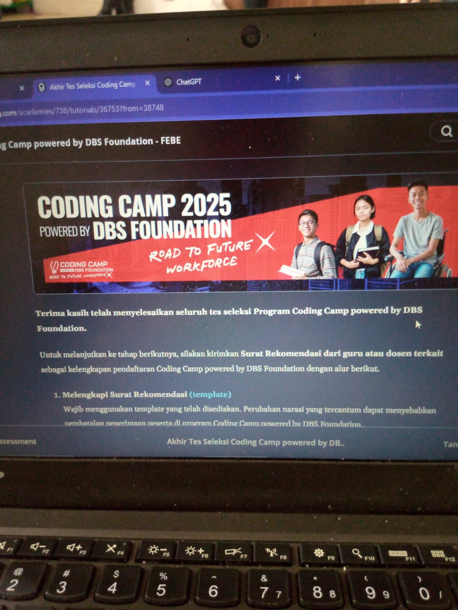
- Hari ke-2: berikut adalah dokumentasi saya pada hari kedua
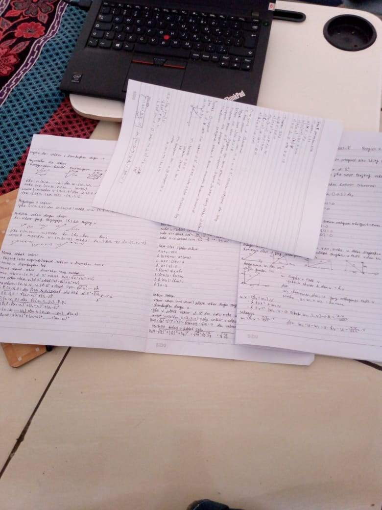
- Hari ke-3: berikut adalah dokumentasi saya pada hari ketiga
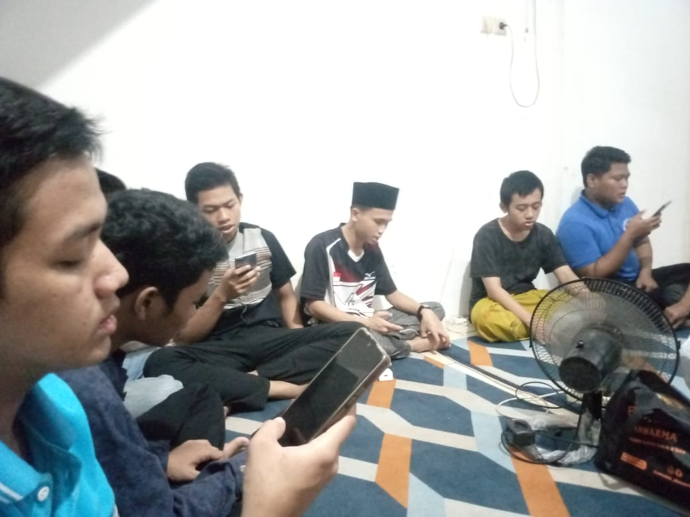
- Hari ke-4: berikut adalah dokumentasi saya pada hari keempat
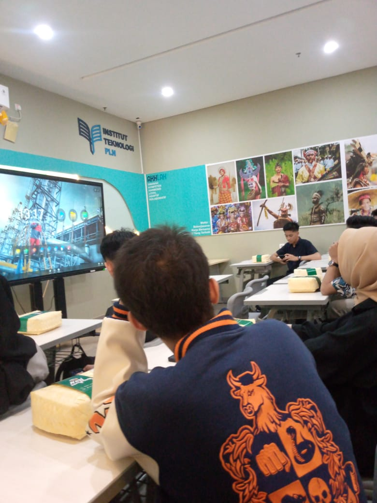
- Hari ke-5: berikut adalah dokumentasi saya pada hari kelima
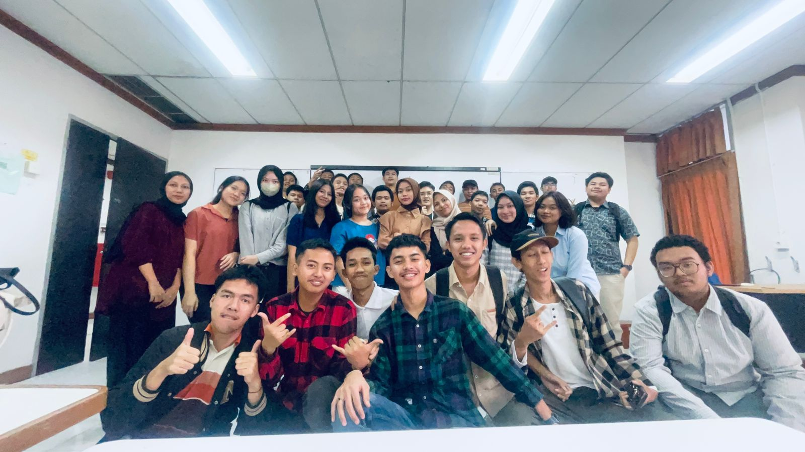
- Hari ke-6: berikut adalah dokumentasi saya pada hari keenam
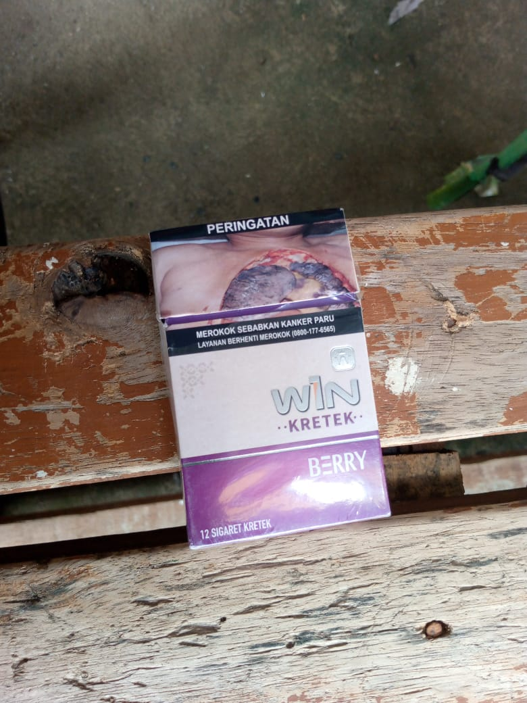
- Hari ke-7: berikut adalah dokumentasi saya pada hari ketujuh
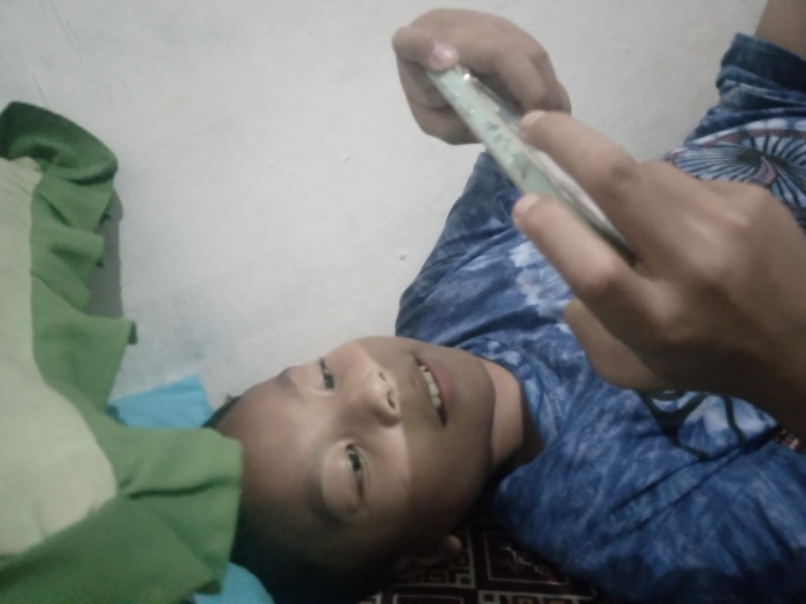
- Hari ke-8: berikut adalah dokumentasi saya pada hari kedelapan
- Hari ke-9: berikut adalah dokumentasi saya pada hari kesembilan
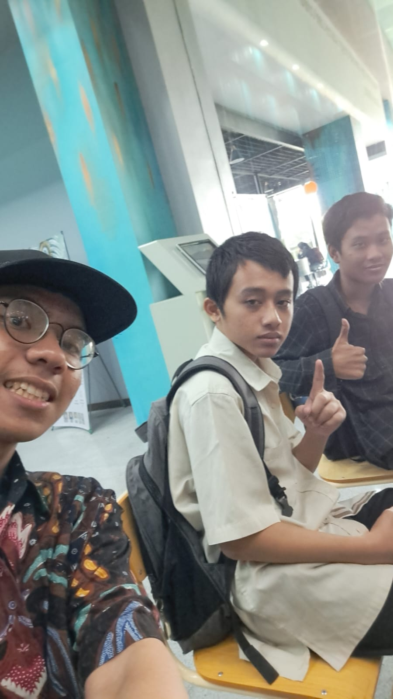
- Hari ke-10: berikut adalah dokumentasi saya pada hari kesepuluh
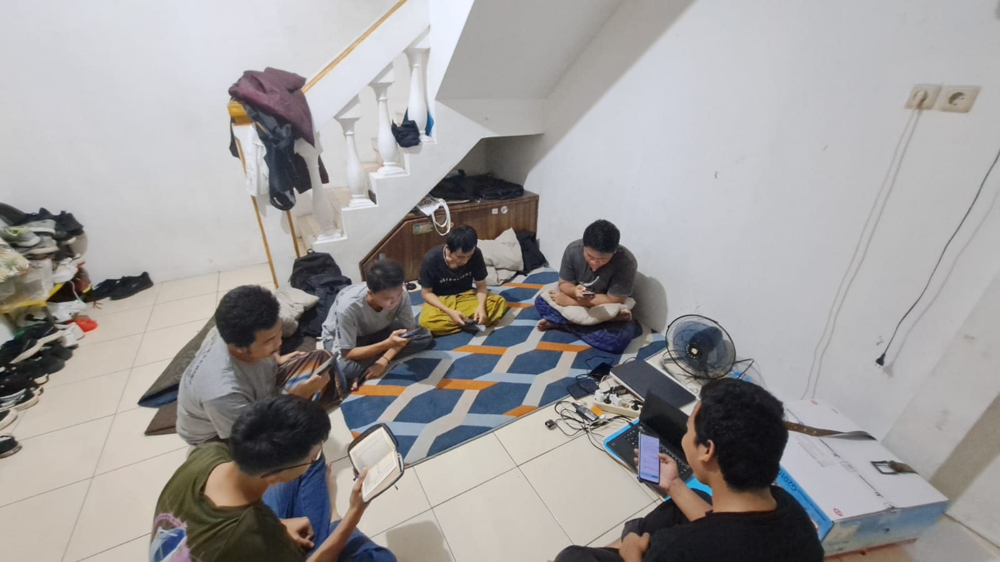
- Hari ke-11: berikut adalah dokumentasi saya pada hari kesebelas
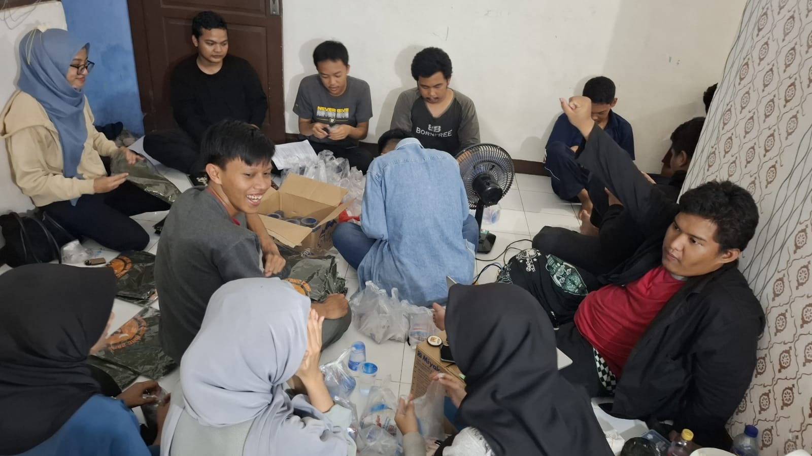
- Hari ke-12: berikut adalah dokumentasi saya pada hari kedua belas
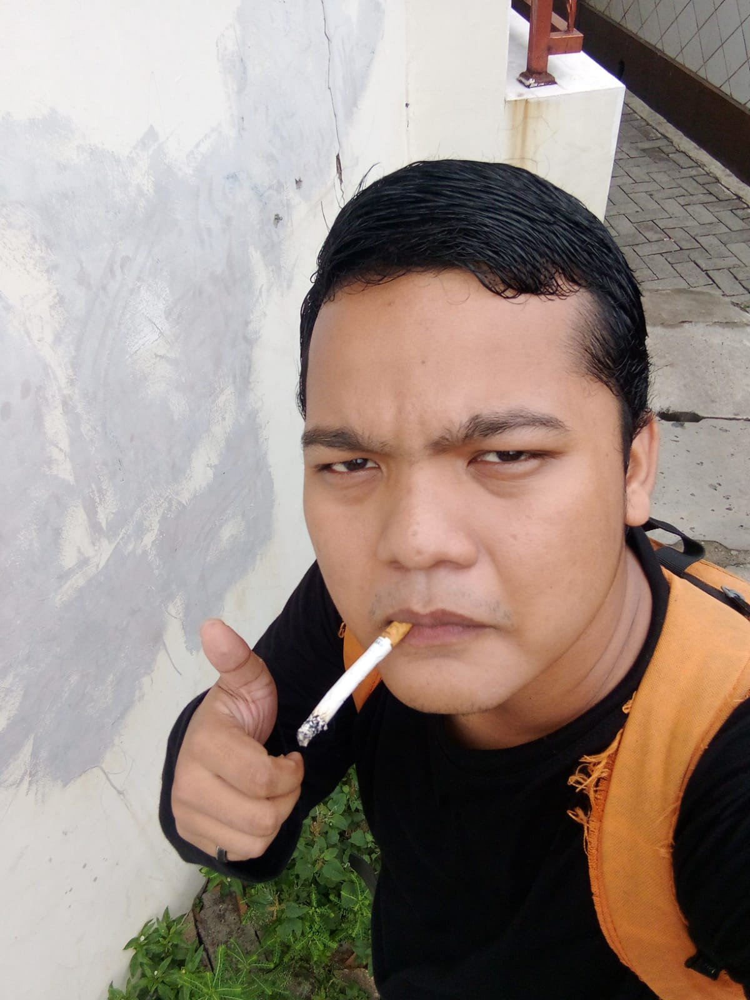
- Hari ke-13: berikut adalah dokumentasi saya pada hari ketiga belas
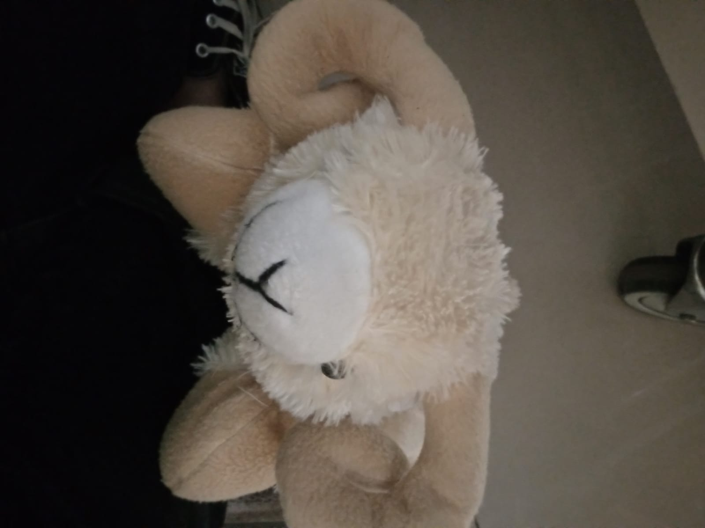
- Hari ke-14: berikut adalah dokumentasi saya pada hari keempat belas
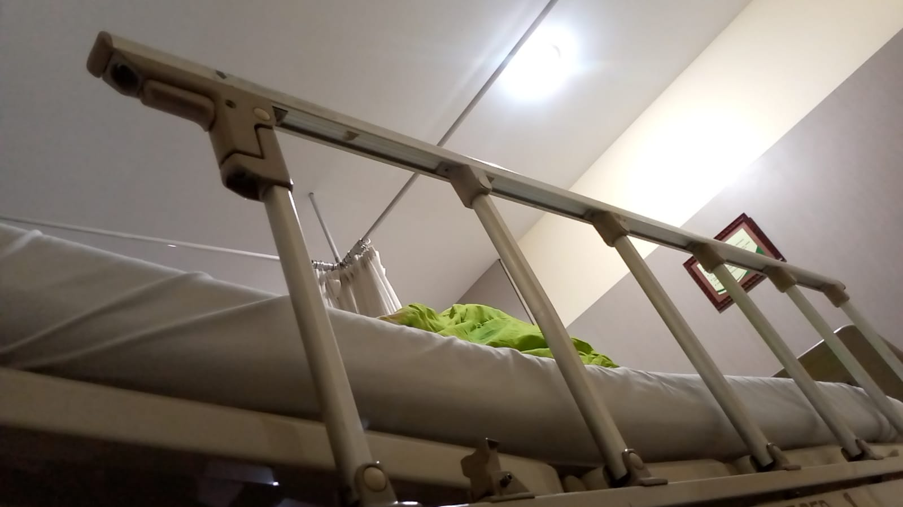
- Hari ke-15: berikut adalah dokumentasi saya pada hari kelima belas
- Hari ke-16: berikut adalah dokumentasi saya pada hari keenam belas
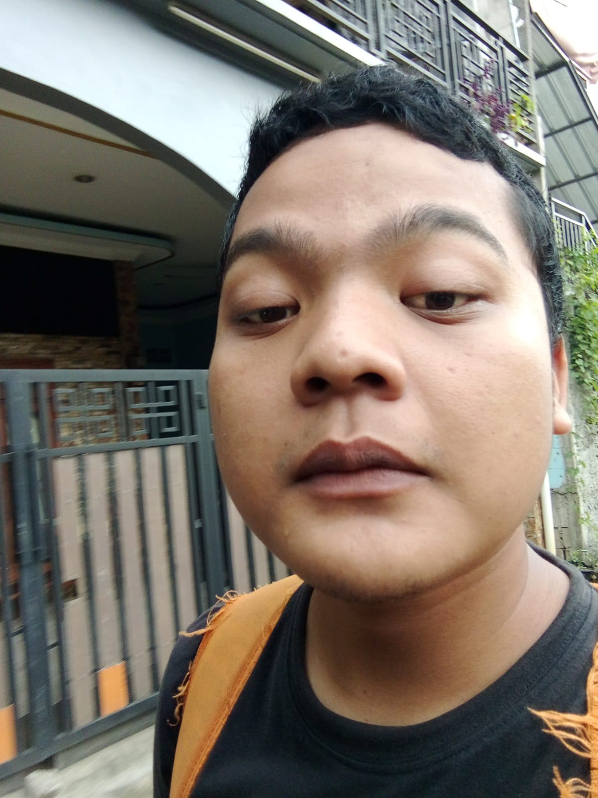